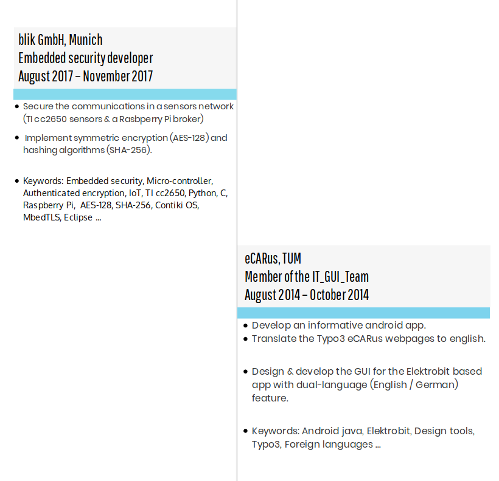

Internships¶
Overview¶
blik GmbH, Munich¶
During my research internship at I was responsible for securing the telecommunications between the brokers (Raspberry pi) and the Sensor-tags using various techniques such as symmetric encryption (AES-128), hashing (SHA-256). During the internship I was able to put to test my python skills and improve my C knowledge. Furthermore, I was able to get familiar with Contiki OS and software development in a professional environment.
eCARus, TUM¶
In the IT GUI Team I was responsible for the development of an android Application and the Surface of the Elektrobit-application. Therefore I planned the app-structure plus I had to collect the suitable icons and design material. During the practice phase, I developed a dual-language (English / German) Elektrobit-based-Surface and android Application containing information about the eCARus 2.0.